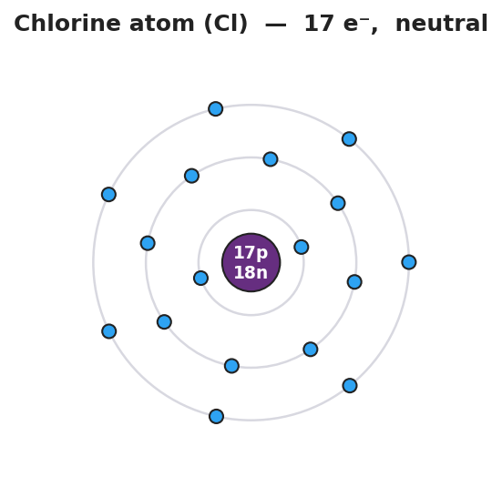
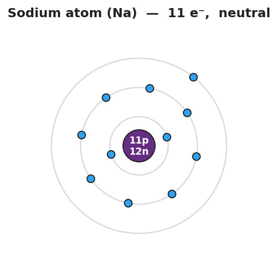
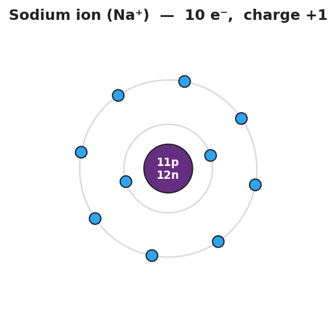

01 Phenomenon
A pea-sized piece of pure sodium metal dropped into water skitters, fizzes, and can burst into flame — a violent reaction. Yet you eat sodium every single day: it is half of the table salt (NaCl) on your fries and it is dissolved safely in your own blood and tears. Same element, atomic number 11, in both cases. One version explodes on contact with water. The other version is so calm we sprinkle it on food. The nucleus never changed — there are 11 protons either way.
02 Driving question
Why does sodium metal react violently with water, but sodium ion sits peacefully in table salt?
03 Notice & wonder
| I notice… | I wonder… |
|---|---|
Turn & Talk #1: The nucleus has 11 protons in both the explosive sodium metal and the safe sodium in table salt. If the protons did not change, what must have changed to make the safe version behave so differently? Name the specific particle.
04 Initial model
Your teacher is projecting two pictures of chlorine: a neutral chlorine atom (Cl) and the form of chlorine found in table salt.

Chlorine has 17 protons and 17 electrons. Its outer shell holds 7 electrons — one short of a full shell of 8. Sodium became stable by losing one electron. What is the easiest way for chlorine to reach a full outer shell?
Will chlorine lose or gain electrons to reach a full outer shell? _______________
How many electrons does it change? _______________
After the change, count the particles:
| Protons | Electrons | Overall charge | |
|---|---|---|---|
| Chlorine atom (before) | 17 | 17 | |
| Chlorine after the change | 17 | ___ |
- Write the symbol and charge for the chlorine particle found in table salt: _______________
05 Investigate
Part 1 — ABCs: Build the two versions of sodium
Look at the two pictures of sodium your teacher is projecting. The nucleus is identical in both — 11 protons, 12 neutrons. Only the electrons differ.


Count and compare:
| Protons | Electrons | Outer shell | Overall electric charge | |
|---|---|---|---|---|
| Left picture (Na) | 11 | ___ | 1 electron, not full | |
| Right picture (Na⁺) | 11 | ___ | 8 electrons, full |
What happened to the lonely outer electron in the second picture? _______________________________________________
After sodium loses that electron, are there more protons or more electrons? _______________
What is the overall charge of the right picture, and why? _______________________________________________
Part 2 — Predict the ion from the group number
Use only the periodic table — do not memorize. For each element, find its group, count its valence electrons, decide whether losing or gaining is the shorter path to a full outer shell (8, or 2 for the smallest atoms), and write the ion.
| Element | Group | Valence e⁻ | Lose or gain? | Ion formed |
|---|---|---|---|---|
| Na (sodium) | 1 | |||
| K (potassium) | 1 | |||
| Ca (calcium) | 2 | |||
| O (oxygen) | 16 | |||
| F (fluorine) | 17 | |||
| Cl (chlorine) | 17 |
Part 3 — Find the pattern
Look down the Group 1 rows (Na, K). What charge do their ions share? _______________
Look at the Group 17 rows (F, Cl). What charge do their ions share? _______________
Write a rule: how can you predict the ion of any element you have never studied, using only its group number?
06 Make it make sense
For each element below, predict the ion it forms. Show the valence-electron count, state lose or gain, and write the ion symbol with its charge. These are the same elements you practiced in the Investigation — confirm your work here.
1. Potassium (K), Group 1
- Valence electrons: ___
- Lose or gain (and how many)? _______________
- Ion symbol and charge: _______________
2. Calcium (Ca), Group 2
- Valence electrons: ___
- Lose or gain (and how many)? _______________
- Ion symbol and charge: _______________
3. Oxygen (O), Group 16
- Valence electrons: ___
- Lose or gain (and how many)? _______________
- Ion symbol and charge: _______________
07 Key vocabulary
- ion
- an atom (or group of atoms) that has gained or lost one or more electrons, so that its numbers of protons and electrons no longer balance and it carries a net electric charge; the nucleus is unchanged — only electrons move
- cation
- a positive ion, formed when an atom *loses* one or more electrons so that protons outnumber electrons; metals (left side of the periodic table) tend to form cations, e.g., Na⁺, Ca²⁺
- anion
- a negative ion, formed when an atom *gains* one or more electrons so that electrons outnumber protons; nonmetals (right side of the periodic table) tend to form anions, e.g., Cl⁻, O²⁻
Use each term in a sentence about today’s phenomenon or investigation. Do not copy the definition — describe something you actually did or observed.
ion: _______________________________________________ _______________________________________________
cation: _______________________________________________ _______________________________________________
anion: _______________________________________________ _______________________________________________
08 Revise your model
Return to your sodium diagrams from Part 1. Add vocabulary labels:
Label the Na⁺ diagram with the correct term (cation or anion): _______________
Label the Cl⁻ diagram from your Initial Model with the correct term: _______________
Write a revised appositive sentence defining one of the terms:
An anion — _______________________________ — has more _______ than _______.
Then finish this Because / But / So sentence:
Sodium metal reacts violently with water, but the sodium ion in salt does not, because __________________________________________, but __________________________________________, so __________________________________________.
09 Exit ticket
(a) Magnesium (Mg) is in Group 2. Predict the ion it forms. Does it lose or gain electrons, and what is the ion symbol and charge?
Valence electrons: ___ Lose or gain (how many)? _______________ Ion: _______________
(b) Sulfur (S) is in Group 16. Predict the ion it forms. Does it lose or gain electrons, and what is the ion symbol and charge?
Valence electrons: ___ Lose or gain (how many)? _______________ Ion: _______________
(c) In one sentence using the word ion, explain why the Na⁺ in table salt does not react with water the way sodium metal does.
10 Explore further
- Ion-formation diagrams (core activity): Students draw before/after Bohr-style shell diagrams for sodium and chlorine, physically crossing out the lost electron on Na and adding the gained electron to Cl, then writing the resulting charge. Use the rendered figures `figures/na_atom.png`, `figures/na_cation.png`, `figures/cl_atom.png`, and `figures/cl_anion.png` as the projected models and the answer reference. A Javalab "Bohr model / electron shell" simulator can be used as an optional digital warm-up so students can add and remove electrons and watch the shell fill, but no external URL is required — the printed diagrams carry the lesson.
- Predict-the-charge from group number (core practice): Using only the periodic table (no memorization), students fill a table: element → group number → valence electrons → gain or lose? → ion symbol and charge. This is the central NYSSLS skill and the spine of the Investigation.